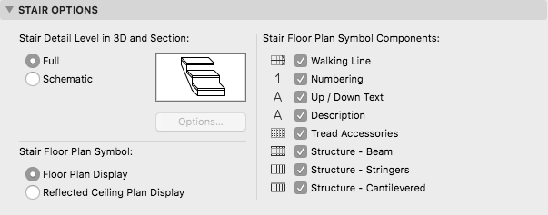

API_StairModelViewOptions
Represents the model view options of Stairs made with Stair Tool. The entire structure is Archicad only.
typedef struct {
char stair3DDetailLevel;
char stairFloorPlanVisualization;
bool showStairHeadroom;
char filler_1[5];
bool stairFloorPlanCompWalkingLine;
bool stairFloorPlanCompNumbering;
bool stairFloorPlanCompUPDOWNText;
bool stairFloorPlanCompDescription;
bool stairFloorPlanCompTreadAccessories;
bool stairFloorPlanCompStructureBeamSupport;
bool stairFloorPlanCompStructureStringers;
bool stairFloorPlanCompStructureCantilevered;
bool stairReflectedCompWalkingLine;
bool stairReflectedCompDescription;
bool stairReflectedCompStructureBeamSupport;
bool stairReflectedCompStructureStringers;
bool stairReflectedCompStructureCantilevered;
bool filler_2[3];
API_AttributeIndex stairSchemeSurfaceIndex;
API_AttributeIndex stairSchemeCutLineIndex;
short stairSchemeCutLinePenIndex;
API_AttributeIndex stairSchemeUncutLineIndex;
short stairSchemeUncutLinePenIndex;
short filler_3[3];
} API_StairModelViewOptions;
Members
- stair3DDetailLevel
- Detail level of Stairs in 3D display.
Possible values:API_Stair3DDetail_Full,API_Stair3DDetail_Schematic. - stairFloorPlanVisualization
- Visualization mode for Stairs in Floor Plan view
Possible values:API_StairFloorPlanVisual_FloorPlan,API_StairFloorPlanVisual_Reflected. - showStairHeadroom

- Show the headroom above the stair.
- stairFloorPlanCompWalkingLine
- Walking Line is visible in Floor Plan Visualization.
- stairFloorPlanCompNumbering
- Numbering is visible in Floor Plan Visualization.
- stairFloorPlanCompUPDOWNText
- UP-DOWN Text is visible in Floor Plan Visualization.
- stairFloorPlanCompDescription
- Description is visible in Floor Plan Visualization.
- stairFloorPlanCompTreadAccessories
- Accessories of Treads are visible in Floor Plan Visualization.
- stairFloorPlanCompStructureBeamSupport
- Structure beams of Stairs are visible in Floor Plan Visualization.
- stairFloorPlanCompStructureStringers
- Stringers are visible in Floor Plan Visualization.
- stairFloorPlanCompStructureCantilevered
- Cantilevered structure is visible in Floor Plan Visualization.
- stairReflectedCompWalkingLine
- Walking Line is visible in Reflected Ceiling Plan Display.
- stairReflectedCompDescription
- Description is visible in Reflected Ceiling Plan Display.
- stairReflectedCompStructureBeamSupport
- Structural beams of Stairs are visible in Reflected Ceiling Plan Display.
- stairReflectedCompStructureStringers
- Stringers of Stairs are visible in Reflected Ceiling Plan Display.
- stairReflectedCompStructureCantilevered
- Cantilevered structure is visible in Reflected Ceiling Plan Display.
- stairSchemeSurfaceIndex
- Index of the Surface attribute to use in Schematic 3D Display Detail.
- stairSchemeCutLineIndex
- Index of the Line attribute to use in Schematic 3D Display Detail as Cut Line.
- stairSchemeCutLinePenIndex
- Index of the Pen in the current Pen Table to use in Schematic 3D Display Detail as the Cut Line Pen.
- stairSchemeUncutLineIndex
- Index of the Line attribute to use in Schematic 3D Display Detail as Uncut Line.
- stairSchemeUncutLinePenIndex
- Index of the Pen in the current Pen Table to use in Schematic 3D Display Detail as the Uncut Line Pen.
Remarks
These settings correspond to the relevant items in the Document/Set Model View/Model View Options dialog/Stair Options page.

Requirements
- Version: API 21 or later
- Header: APIdefs_Environment.h
See Also
API_AttributeIndex, API_ModelViewOptions, APIEnv_GetViewOptionsID, APIEnv_ChangeViewOptionsID,
API_NavigatorView,
API Types